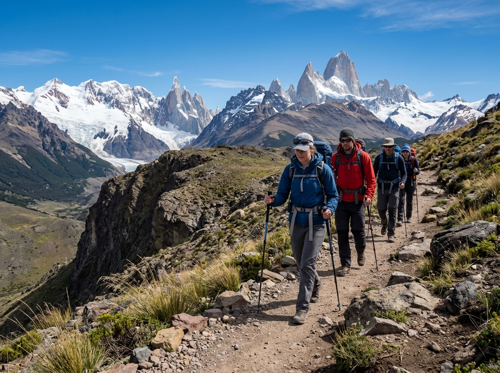
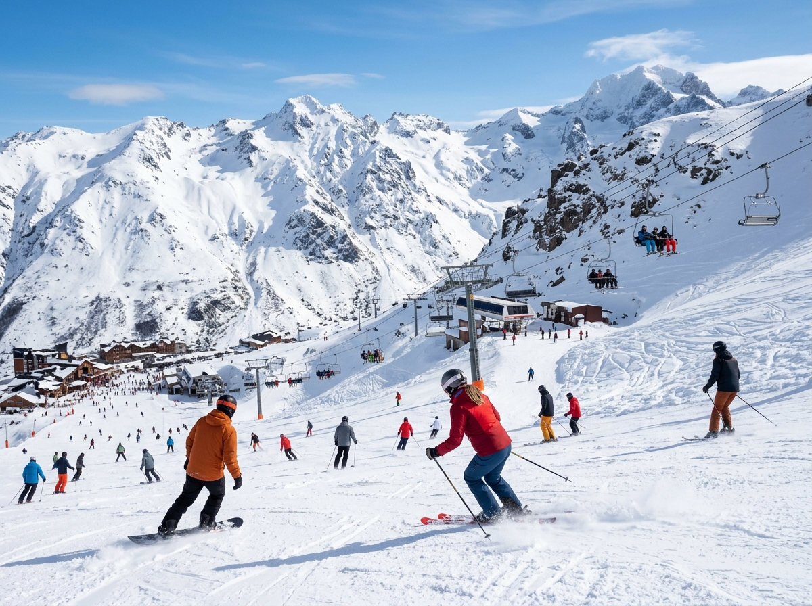
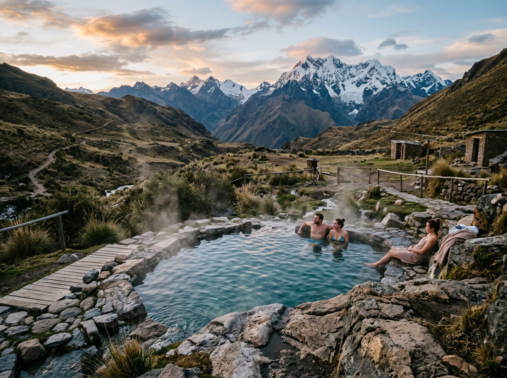
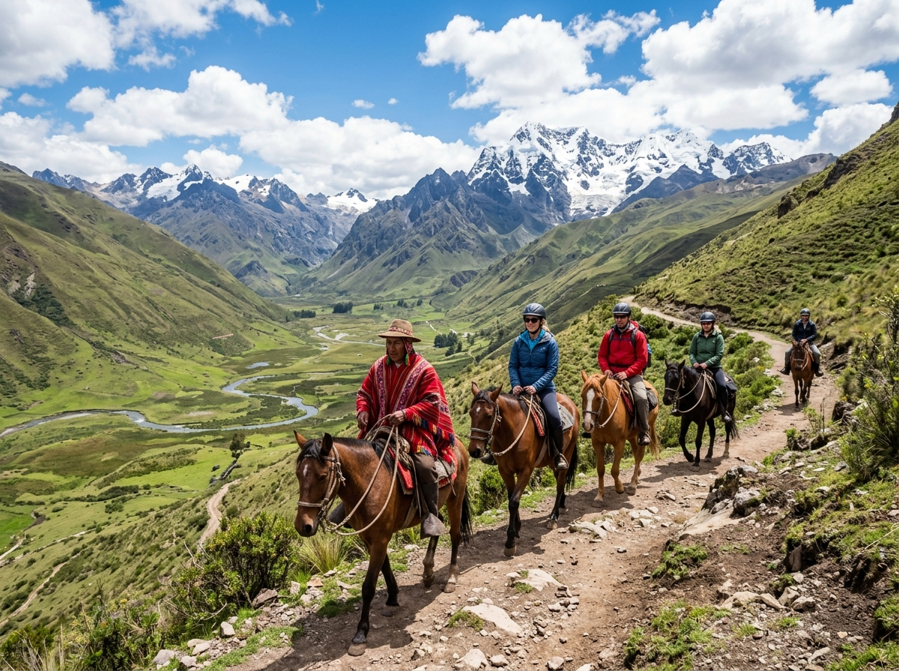
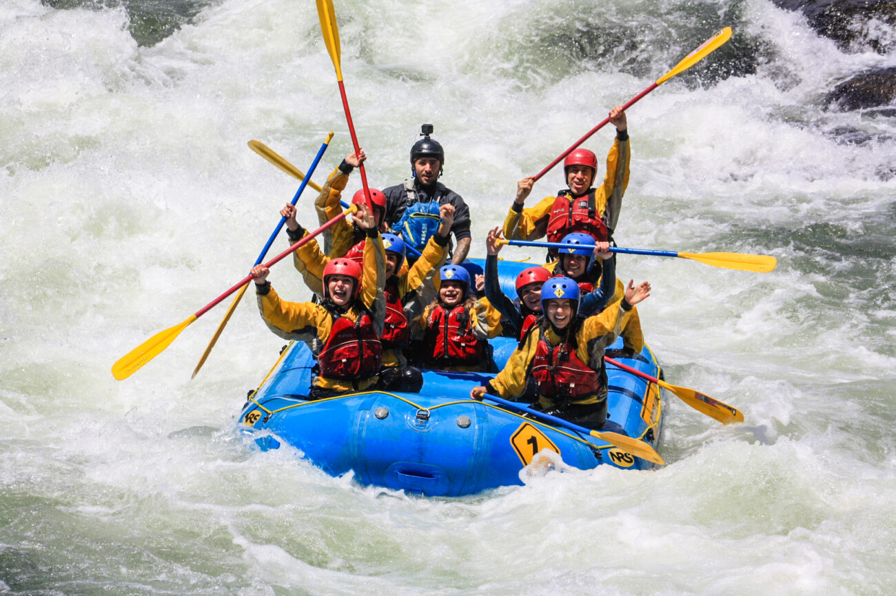
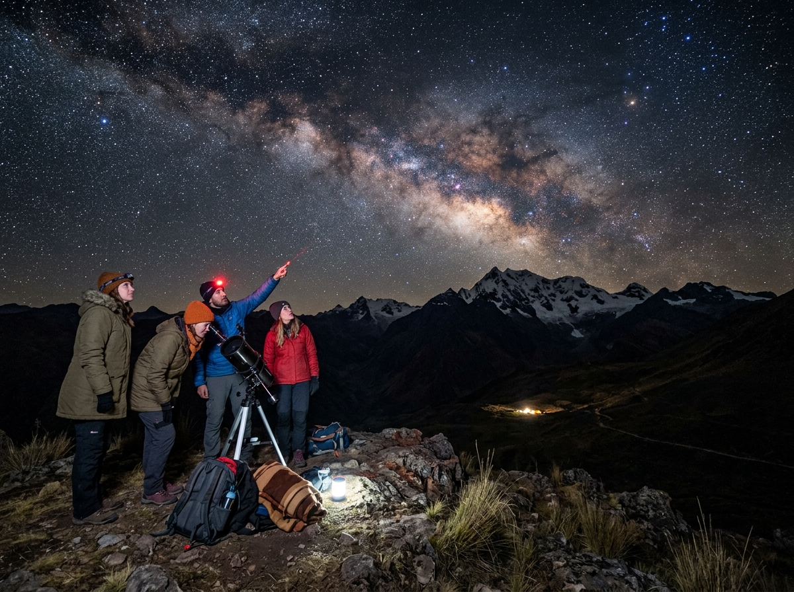

Panoramas y Actividades en la Cordillera
Descubre las mejores experiencias turísticas en el corazón de los Andes,
diseñadas para amantes de la naturaleza, el deporte al aire libre y familias
que buscan desconectarse rodeados de paisajes sobrecogedores y aire puro de montaña.
Guias Locales Certificados
Seguridad y Equipamiento
Panoramas Familiares y Extremos
Turismo Sustentable

Trekking y Montaña
Trekking al Glaciar y Lagunas Andinas
Asciende por senderos milenarios rodeados de imponentes macizos rocosos y
valles glaciares, una travesia inolvidable para conectar con la naturaleza virgen
y contemplar condores en pleno vuelo.
- Dificultad: Media (buena condicion fisica)
- Duracion: 6 horas (Jornada completa)
- Temporada: Octubre a Mayo
- Incluye: Guia bilingüe, bastones y snack

Nieve e Invierno
Dia de Nieve, Esqui y Snowboard
Disfruta de la mejor nieve de la cordillera en modernos centros invernales,
contamos con zonas de aprendizaje para principiantes y pistas desafiantes para los mas
experimentados.
- Dificultad: Todos los niveles
- Duracion: Dia completo (08:30 a 17:30 hrs)
- Temporada: Junio a Septiembre
- Incluye: Ticket de andarivel y opcion de arriendo

Relax y Bienestar
Termas Naturales y Spa de Montaña
Sumergete en pozones de aguas termales volcanicas con minerales curativos mientras
aprecias la vista panoramica de las cumbres nevadas. Un descanso reparador para
cuerpo y mente.
- Dificultad: Baja (Apto para toda la familia)
- Duracion: 4 a 5 horas
- Temporada: Todo el año
- Incluye: Entrada a pozones, vestidores y toallas

Cultura y Paisajes
Cabalgatas con Arrieros Cordilleranos
Acompaña a arrieros locales en una expedicion a caballo por quebradas secretas,
cruzando arroyos cristalinos y alcanzando miradores que no son accesibles en vehiculo.
- Dificultad: Baja a Media
- Duracion: 4 horas
- Temporada: Todo el año
- Incluye: Caballo manso, montura, casco y guia arriero

Aventura Extrema
Rafting y Adrenalina en Rapidos
Siente la emocion pura descendiendo por los torrentosos ríos de la cordillera.
Enfrenta rápidos clase III y IV con guias certificados y equipamiento de maxima
seguridad internacional.
- Dificultad: Media / Exigente
- Duracion: 3 horas (1.5 horas en el río)
- Temporada: Septiembre a Abril
- Incluye: Traje termico, chaleco salvavidas, casco y fotos profesionales

Noche y Astronomia
Astroturismo: Noche Bajo las Estrellas
Aprovecha uno de los cielos mas limpios del planeta libre de contaminacion de la cuidad.
Observa constelaciones, planetas y nebulosas a traves de telescopios astronomicos
guiado por expertos.
- Dificultad: Baja (Todo público)
- Duracion: 3.5 horas (horario nocturno)
- Temporada: Todo el año (noches despejadas)
- Incluye: Telescopios de alta gama, puntero laser y bebida caliente
Recomendaciones para tu Visita a la Cordillera
La alta montaña es un entorno maravilloso pero exigente, sigue estos consejos para una mejor
experiencia.
Viste en Capas
El clima de cordillera cambia velozmente, usa una capa transpirable, abrigo intermedio (polar o
pluma) y chaqueta impermeable o cortaviento.
Proteccion Solar UV
La radiacion solar aumenta con la altura y el reflejo de la nieve o roca, aplica protector solar
SPF 50+, gafas con filtro UV y sombrero.
Hidratacion y Energia
El aire de montaña es seco y favorece el cansancio, lleva al menos 2 litros de agua por persona,
frutos secos y barras energéticas.
No Deje Rastro
Conserva el patrimonio natural, debes regresar con toda tu basura, no prendas fuego en zonas no
autorizadas y respeta la flora y fauna.
¿Listo para vivir tu proxima gran experiencia?
Reserva hoy mismo tu cupo para cualquiera de nuestros panoramas o contactanos si necesitas un
itinerario
personalizado para grupos o empresas.
Ir a Reserva y Contacto